Fall 2009 Photos
Disneyland ResortKnotts Berry FarmSix Flags Magic Mountain
 The next stop on our trip would be Knotts Berry Farm. We'll start out the day by having Celeste jump up to reach random chicken signs.
The next stop on our trip would be Knotts Berry Farm. We'll start out the day by having Celeste jump up to reach random chicken signs.
 Ok, so the first coaster of the day would indeed be Ghostrider.
Ok, so the first coaster of the day would indeed be Ghostrider.
 Depsite what many people in the Rollercoaster Community say, Ghostrider is not unbearably rough.
Depsite what many people in the Rollercoaster Community say, Ghostrider is not unbearably rough.
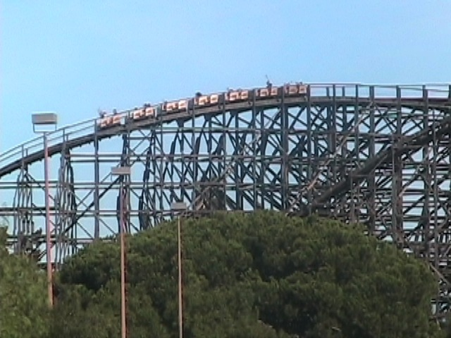
Ok, I'll admit it's not butter smooth. But the way some people bitch about it, You'd think they were talking about Wild Beast.
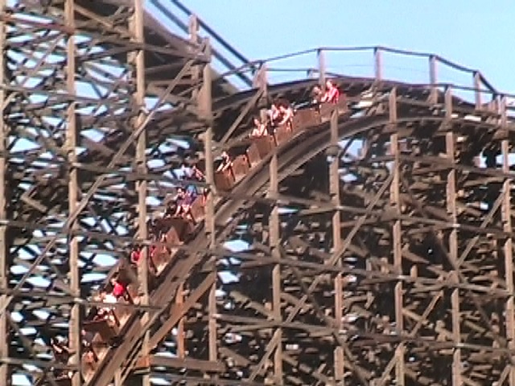
EJECTOR AIR!!!!!
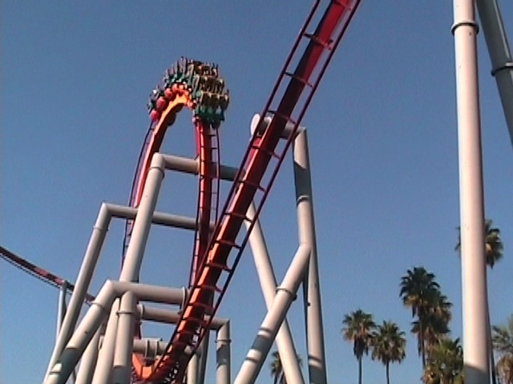
I had a very interesting ride on Silver Bullet on this trip. (I mean this in both a good and a bad way.)
 The good news is that Silver Bullet was more forcefully than I had EVER seen it run before. The bad news is that I ended up losing my Still Camera right at this point on the ride. (Which explains why all the photos from this update are from my Video Camera.)
The good news is that Silver Bullet was more forcefully than I had EVER seen it run before. The bad news is that I ended up losing my Still Camera right at this point on the ride. (Which explains why all the photos from this update are from my Video Camera.)
 It's ironic that I was wearing the EXACT same shorts that I wore when I lost my first cell phone on DejaVu. (They were even in the same fu*king pocket!!!)
It's ironic that I was wearing the EXACT same shorts that I wore when I lost my first cell phone on DejaVu. (They were even in the same fu*king pocket!!!)
"Kevin, nobody cares about your stupid still camera. The real tragedy of this trip is that I got carmel on my shoes!!!!"
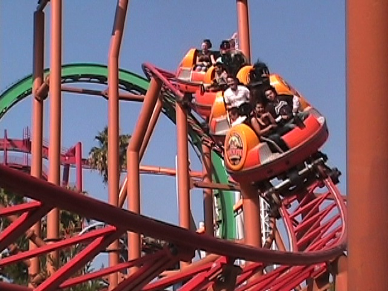
Anyways, since we're now still cameraless and have carmalized shoes, we might as well go on a spinning coaster.
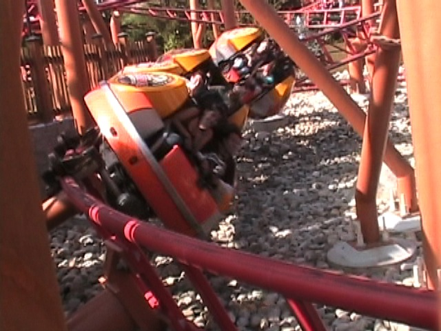
Is it me or has Sierra Sidewinder been spinning less lately?
Here's another look at the Peanuts Playhouse's grave.
"I still can't believe Cedar Fair could do such a thing to my favorite attraction at Knotts. Hand me another tissue."
 This is the closest thing to the Peanuts Playhouse I can do at Knotts.
This is the closest thing to the Peanuts Playhouse I can do at Knotts.
Hey Celeste, now that you rode and liked Xtreme, you can ride La Revolution, and realize why it's such a crappy frisbee.
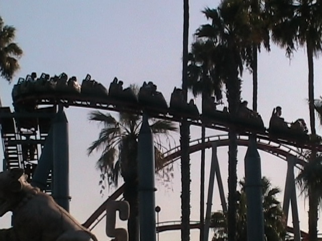
Up next would be the ever so thrilling Jaguar.
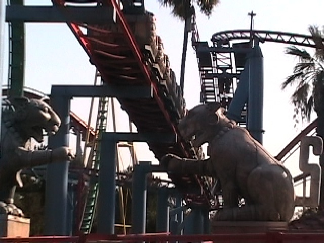
With it's ever so lovely statues. (Hey Celeste, which one of your friends wrote that paper about being scared of Jaguar again?)
 Xcelerator. Knotts Berry Farm's best ride...
Xcelerator. Knotts Berry Farm's best ride...
 is not open today to a damn cable snapping back in September.
is not open today to a damn cable snapping back in September.
I really hope that stuff means that people have been working on it. (Hey, at least the Media didn't freak out about it like they did with Invertigo.
It appears that Knotts has tried to copy Magic Mtns Coke Recycling Bings by making these Pepsi Recycling Bins. I just have to say two things about them. 1. Since when has the color gray represented Pepsi? and 2. The new Pepsi Logo is REALLY FREAKING UGLY!!!! (And despite what some Right Wing Nutjobs may say, it does not look like the Obama Logo.)
*Sigh* "Yes world. I still turn my brain into a block of ice by drinking a milkshake at Coasters."
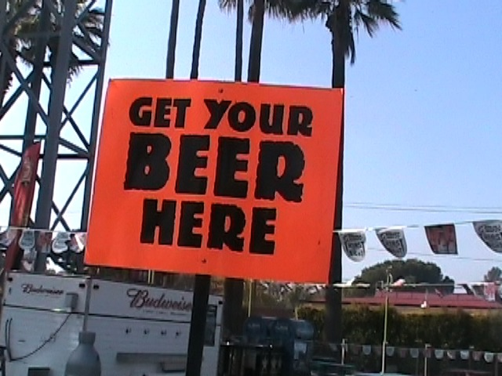
Sweet!! I'll be sure to remember that.
 Nothing helps you digest lunch better than a Vekoma Boomerang.
Nothing helps you digest lunch better than a Vekoma Boomerang.
 Here's a fun little Incrediblecoasters Fact. Until today, the last Boomerang I rode was the one at La Ronde.
Here's a fun little Incrediblecoasters Fact. Until today, the last Boomerang I rode was the one at La Ronde.
To Celeste's joy, Wipeout was open today.
 While Pony Express is fun, I just don't see how building it was a smart move.
While Pony Express is fun, I just don't see how building it was a smart move.
 Hey Knotts, if you really want to make money, how about adding some water cannons. That'll make you some money.
Hey Knotts, if you really want to make money, how about adding some water cannons. That'll make you some money.
It may not be a proper vasectomy, but it'll have to do for now.
Ok. The operations for Perilous Plunge were simply AWFUL today. I first saw it running with people while eating lunch, only to hear it closed. Then when riding Boomerang, I see that the ride has reopened, but when I got off and walked up to the ride, the line was closed. So then I rode Riptide, and I saw it running with people. Then I FINALLY got on. (It probably closed right after got off.)
Well, at least Perilous Plunge still has sweet EJECTOR AIR!!!!!
Is there any reason for these Pepsi Products by Xcelerator?
Supreme Scream was running really well today. It seemed alot more intense than in previous visits.
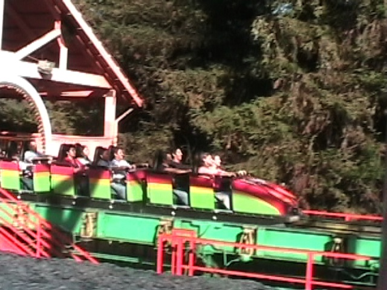
Up next would be Montezoomas Revenge.
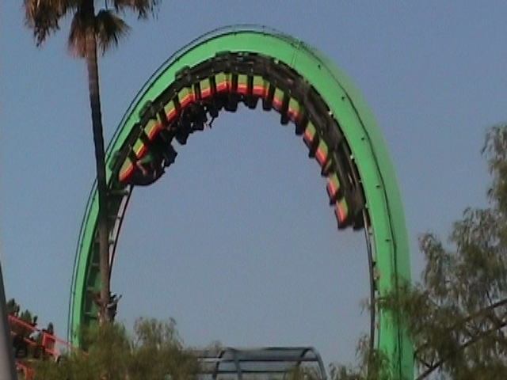
Well, at least Knotts still takes care of Montezoomas Revenge. (Hey, it could have been one of many parks that took out their shuttle loop in 2009.)
 Here's a fun little fact. You can see Tower of Terror while on Montezoomas Revenge.
Here's a fun little fact. You can see Tower of Terror while on Montezoomas Revenge.
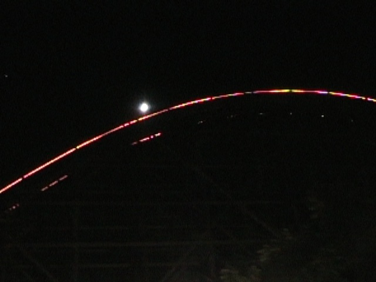
One last ride on Ghostrider before leaving Knotts Berry Farm.
But before we go, we have a chicken dinner at Knotts.
"Stupid Knotts Berry Farm!!! Don't they know that Peach Flavored Butterflys are allergic to gravy!!!?"
Six Flags Magic Mountain
Home